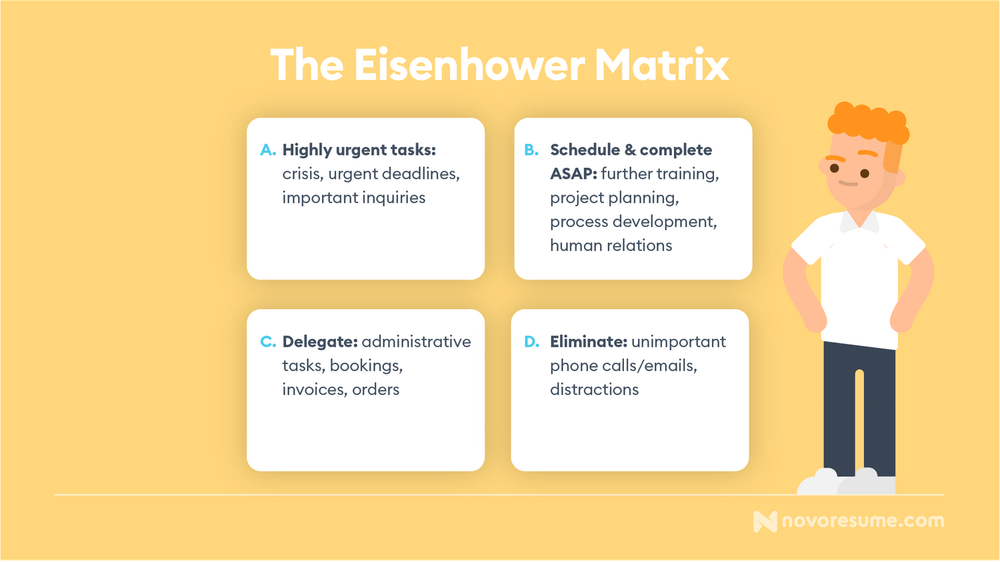

Anyone would benefit from improving their time management skills - it definitely beats working under pressure anytime. After all, if you don't master your time, then opportunities, efficiency, and work-life balance might slip through your fingers!
Nonetheless, time management is easier said than done. As with most soft skills, it takes a lot of practice to get good at.
That said, there are ways to improve your time management skills, and in this article, we'll teach you just what they are!
Let's get started.
#1. Determine Your Priorities
Determining what your priorities are is the first step towards effective time management.
One effective method to prioritize your daily tasks is the Eisenhower Matrix, which allows you to categorize and separate your most critical tasks from those that you can delegate or eliminate entirely.
The method is named after Dwight D. Eisenhower, the 34th president of the United States, who was widely recognized for his efficiency and discipline.
Here is what your methodical planning using the Eisenhower Matrix could look like:

#2. Avoid Multitasking
While many people praise their ability to multitask, there are just as many reasons to believe it can actually get in the way of improving your time management skills.
It is essential to learn how to devote your whole attention to the task at hand if you want to improve your time management skills. Your productivity can only improve if you master sustained focus and effort.
#3. Avoid Distractions
Our daily lives are definitely fast-paced and full of distractions and, more often than not, that gets in the way of improving time management skills. If you're working from home, for instance, it might be hard to concentrate on work due to having more distractions than in the office and, before you know it, you'll have lost hours of your time.
Great ways to avoid distractions include putting your phone aside or turning off the notifications, having an office space even if you're working from home, and asking family members or colleagues not to disturb you with non-work-related matters.
#4. Learn to Say No
Many people will take on as many responsibilities either to make a good impression and showcase their dedication to work or because they just can't say no. Yet, an overwhelming amount of tasks can set a toll on your work efficiency and mindset.
Setting a limit on how much workload you're willing to accept can help you manage your time and concentrate on the most important tasks. In turn, you'll be able to focus and be more productive in the most pressing tasks.
Start by determining how much work is ideal for you and then be sure and confident to decline any offered workload that goes beyond it. If you feel bad about not being able to help, just explain to whoever asked that you don’t have the time to do the quality work they expect or that you have other, more important deadlines to meet.
#5. Use Time Management Apps
It's all too easy to get overwhelmed with never-ending daily reminders of scheduled tasks and meetings, and constantly trying to catch up can take a toll on your workflow.
By using time management apps, you can easily organize everything in one space and track your time for different tasks.
Time management apps like Rescuetime can significantly boost your efficiency. The app allows you to use a Focus Session mode whenever you truly need to focus, preventing main distractions and tracking how effectively you work.
Similarly, time tracking apps like Everhour or Toggl Track can show you how much time you actually spend on any given task.
#6. Organize Your Day
A goal is nothing more than a wish without a solid plan to support it in place. And, without proper day-to-day organization, improving your time management skills can turn into a daunting task.
However, if you organize your day, prioritize your tasks, and measure your progress, you will know precisely where you stand as you work toward your bigger goals.
Now, there are several effective ways to organize your day and get immediate results. For example, work-wise, you can start writing daily to-do lists, taking into account any interruptions that may come up, or dedicating less time to repeating tasks.
#7. Take Breaks
Although you might feel tempted to complete large amounts of work before taking a break, this strategy could seriously harm your mental health.
For starters, skipping frequent, short breaks might result in fast burnout and overwhelming stress. One study found that employees even tend to compromise their lunch breaks, choosing to work instead. This, in turn, has been shown to have badly impacted their mental health.
Stepping away from your work for a few minutes every couple of hours can help you achieve more with greater comfort and enjoyment, boosting your overall efficiency.